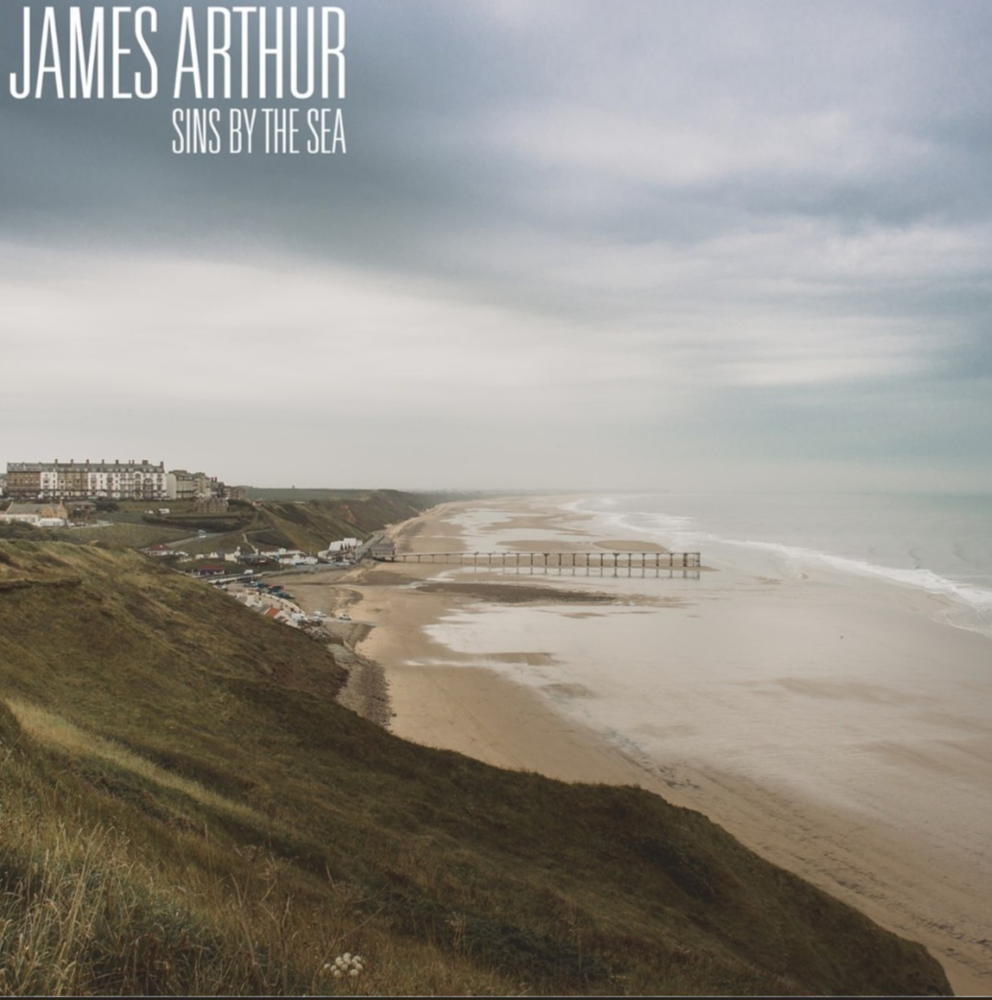
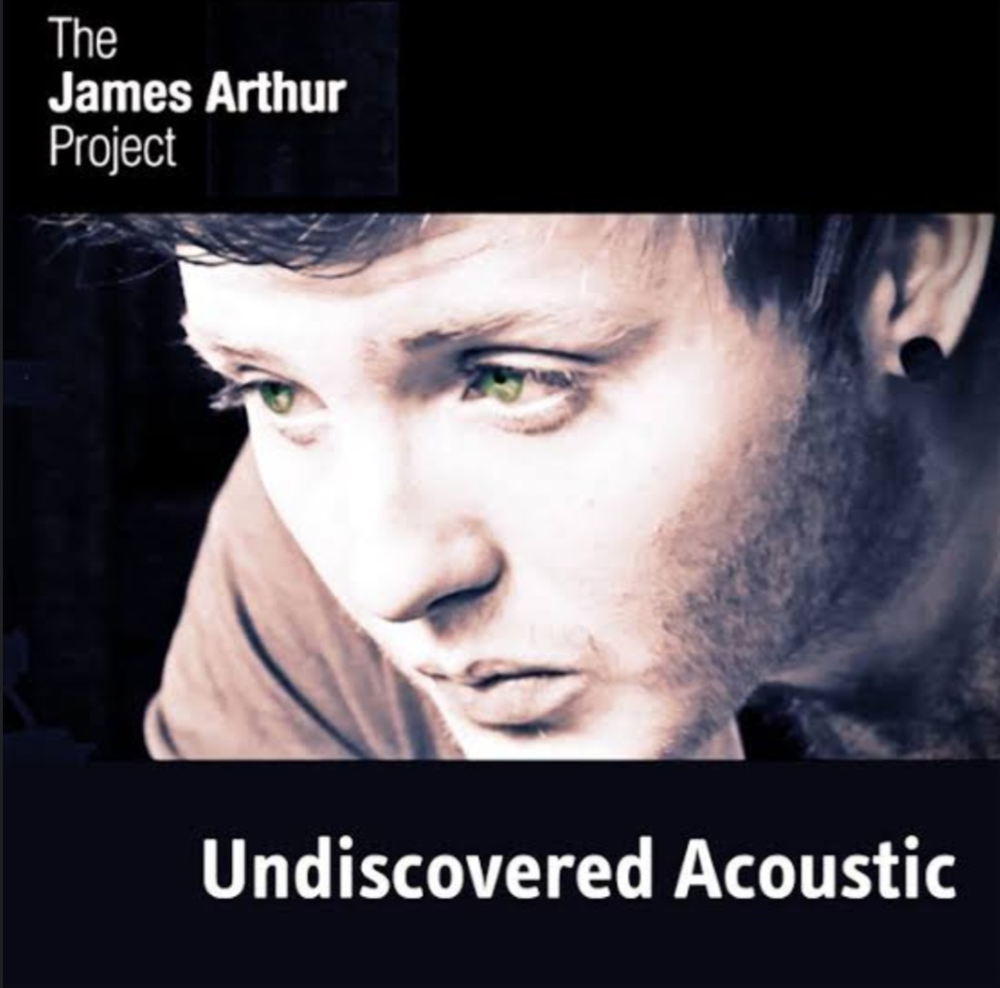
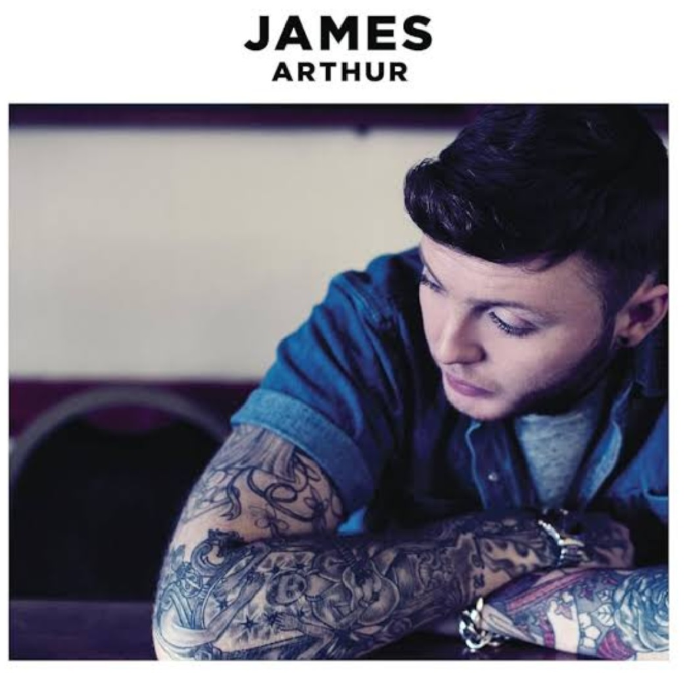
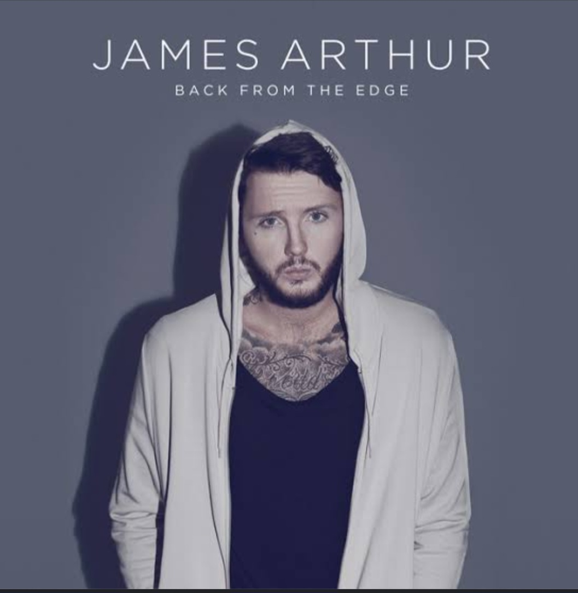
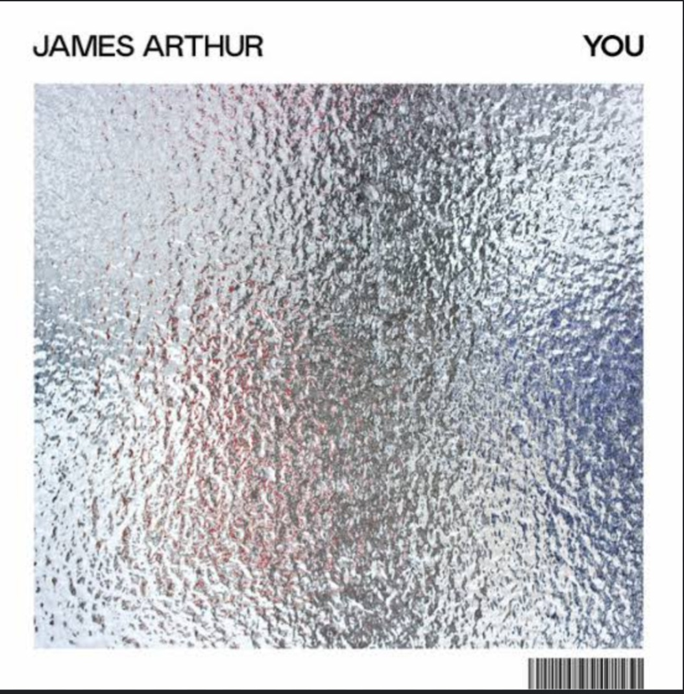
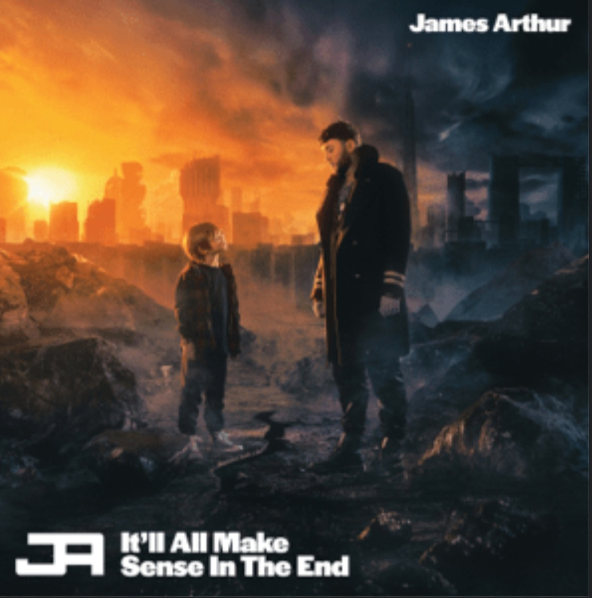
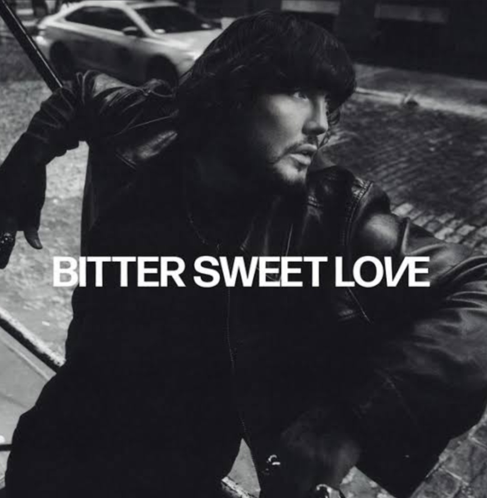

Capa |
Nome |
Ano de lançamento |
Link da Playlist |
 |
Sins by the Sea | 6 de Março de 2011 | Playlist |
 |
Undiscovered Acoustic | 13 de Maio de 2013 | Playlist |
 |
James Arthur | 1 de Novembro | Playlist |
 |
Back From The Edge | 28 de Outubro de 2016 | Playlist |
 |
You | 18 de Outubro de 2019 | Playlist |
 |
It' All Make Sense In The End | 5 de Novembro de 2021 | Playlist |
 |
Bitter Sweet Love | 26 e Janeiro de 2024 | Playlist |